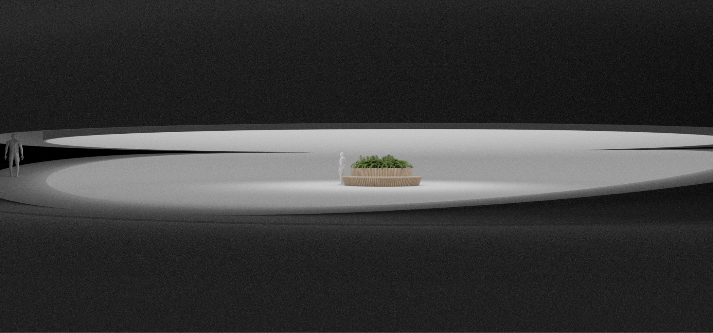
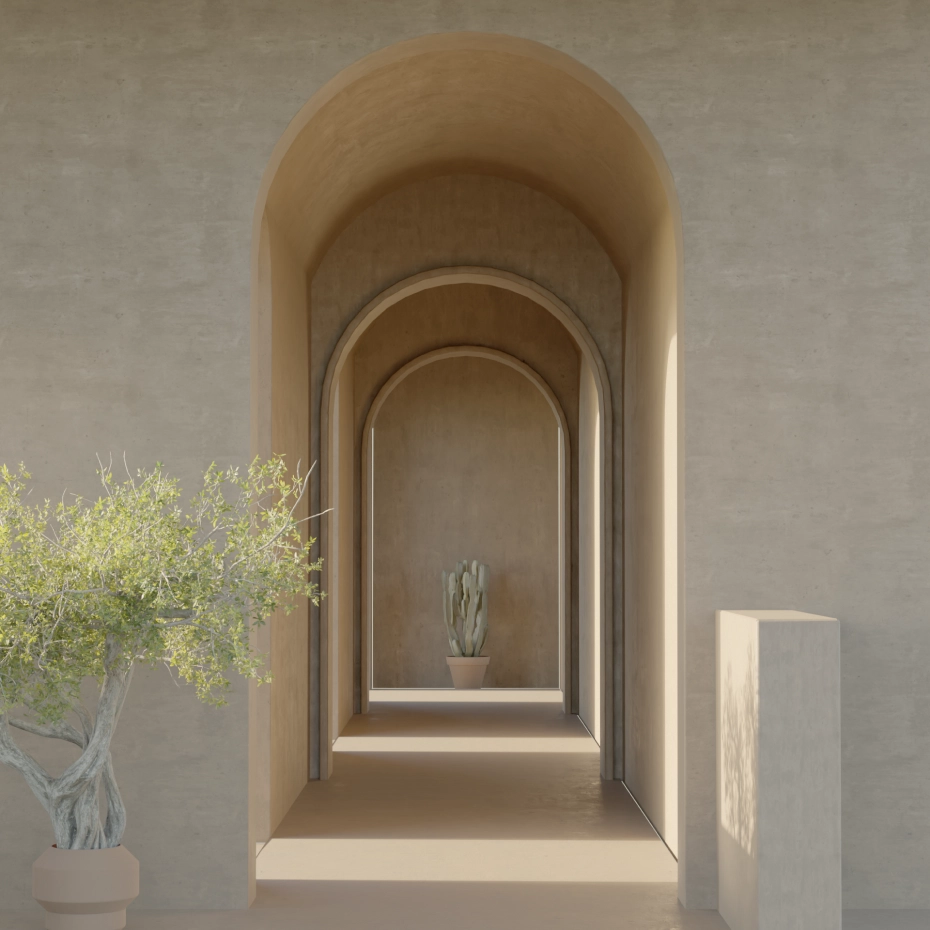
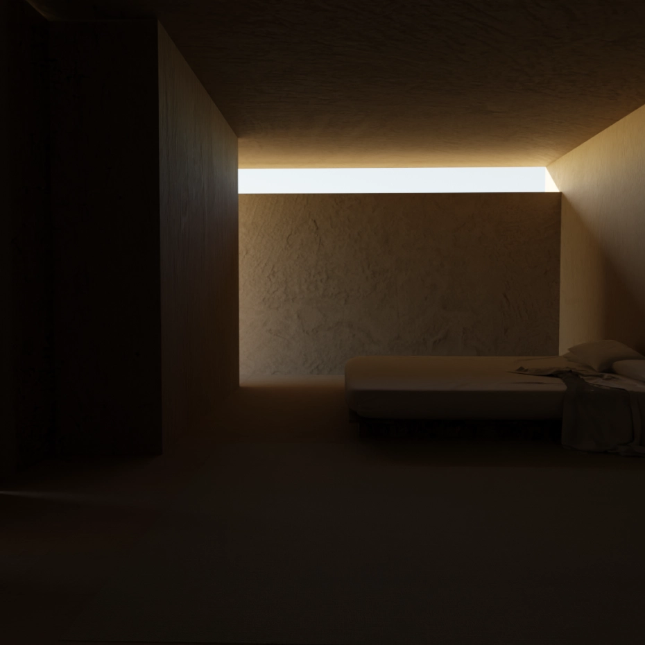
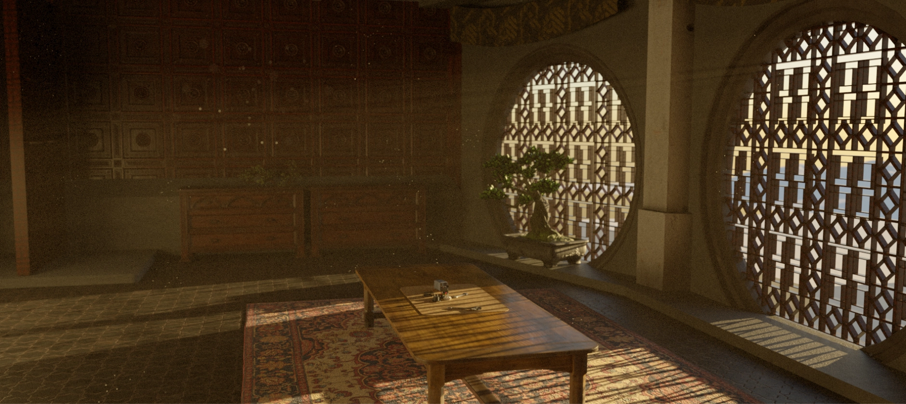
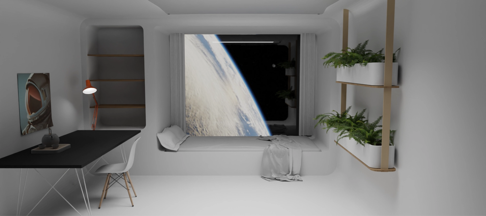

Architecture Visualization
Collection
Status
In Development
Type
3D modeling
These are some small, unsorted architecture visualization projects - mostly just as render practice. All are exclusively modeled and rendered in Blender using conventional modeling and kitbashing techniques.
    